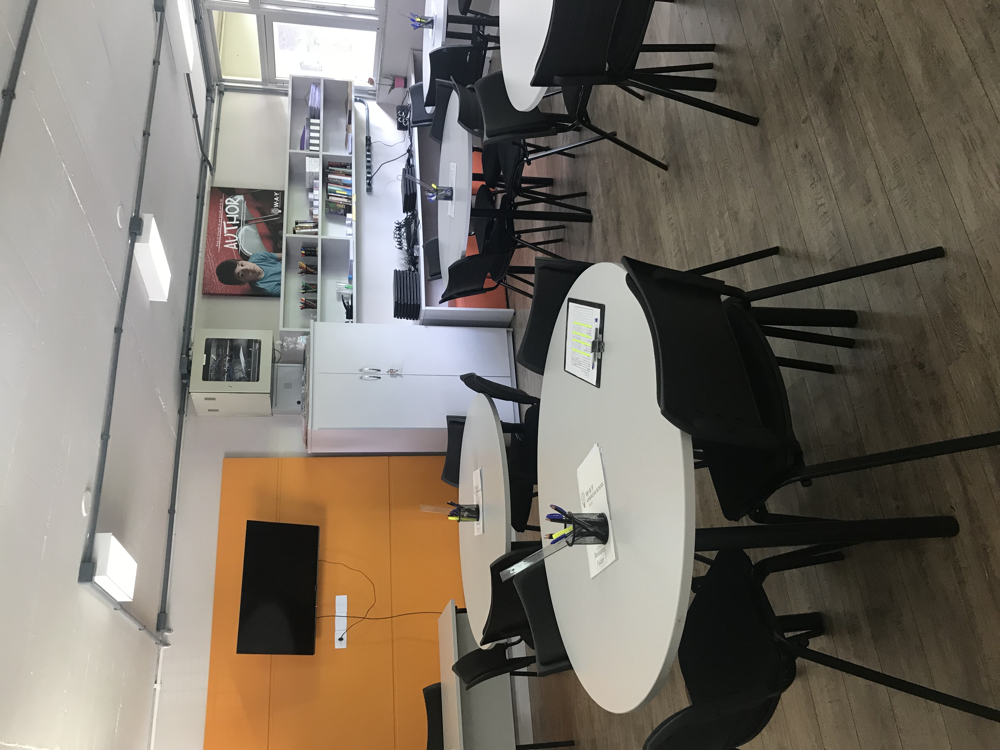
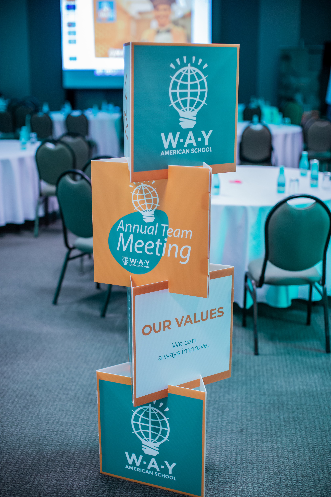
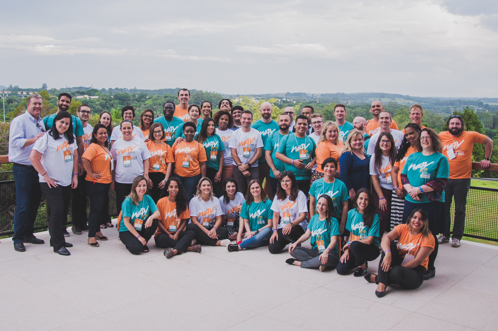
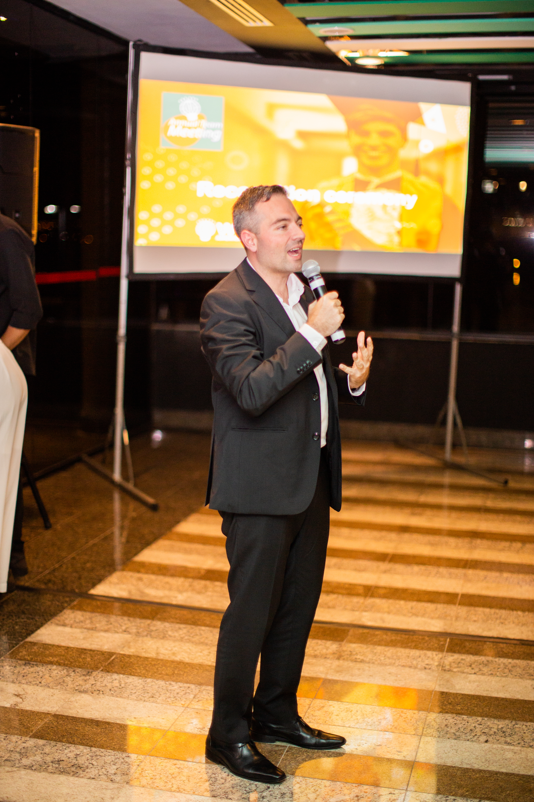
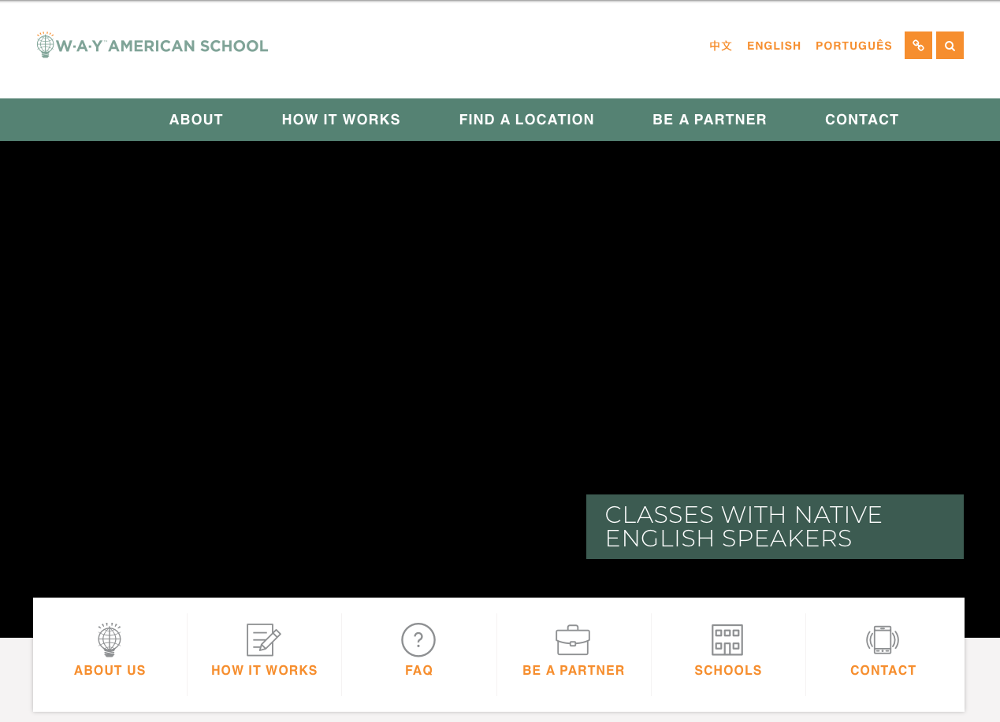
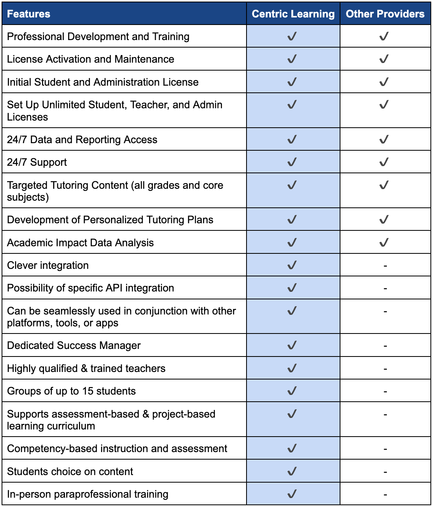

Contexto
Mandato duplo: responsabilidade integral pelo P&L da operação brasileira da WAY American School (marca internacional da Centric Learning) somada à liderança comercial da expansão para o mercado dos EUA (Texas, Flórida). A WAY oferece um diploma de high school americano dentro de escolas particulares parceiras no Brasil — modelo híbrido presencial/on-line, construído sobre a plataforma de aprendizagem baseada em projetos HERO da Centric, credenciada pela Cognia. Eu gerenciava todas as operações comerciais, de marketing, jurídicas e financeiras, com responsabilidade direta perante os fundadores nos EUA.
O desafio
"Um diploma de high school americano sem sair do Brasil" não era uma categoria que os compradores buscavam pelo nome em 2018 — precisava ser construída, não apenas divulgada. Isso significava comprovar credibilidade institucional (credenciamento, resultados acadêmicos reais) e criar percepção de mercado simultaneamente, enquanto a operação escolar real seguia no dia a dia: 14 escolas parceiras, centenas de alunos, famílias reais tomando uma decisão real sobre a educação de seus filhos.
O que construí
Escalei a rede de parceiros de 14 para perto de 40 escolas no Ano 1
O plano estratégico 2018–2019 que construí tinha como meta 31 novas escolas e 12 novas cidades, somando-se à base existente de 14 parceiras e 406 alunos — levando a rede próximo da marca de 40 escolas já no primeiro ano. A base de alunos matriculados cresceu ainda mais rápido do que o número de escolas: de 400 para 950 alunos ativamente matriculados em apenas 8 meses, em 2019. Ao longo de toda a gestão, de 2018 a 2023, a WAY atendeu mais de 2.000 alunos no Brasil, sustentando entre 35 e 38 escolas parceiras e 123 funcionários em toda a operação (80 professores certificados).
Me tornei a voz recorrente na mídia nacional para uma categoria que ainda não existia
Cobertura editorial repetida e não paga nos maiores veículos do Brasil — quatro matérias distintas no Terra.com.br (um dos três maiores portais do Brasil), além de Correio Braziliense, Metrópoles, e uma matéria de mais de 10 páginas na The Knowledge Review nomeando a WAY "Best American High School in Brazil 2022". Também participação recorrente no podcast educacional Papo de Educador, falando sobre a tendência de microescolas/podschools e o ensino a distância na era da COVID.
Conduzi a escola pela COVID sem perder o ano letivo
Dirigi a transição para o ensino totalmente on-line, mantendo o modelo remoto americano da WAY (em operação desde 2009) como espinha dorsal. A transição incluiu um plano estruturado de retorno para o segundo semestre, baseado em dados de risco local citados (uma pesquisa Datafolha mostrando que 76% dos pais temiam mandar os filhos de volta), não em suposições.
Conduzi a entrada no mercado do Texas com a mesma disciplina de pesquisa primeiro
Como Taskforce Lead Strategist em um time dedicado ao Texas, construí um plano de entrada de mercado em torno de linhas de produto específicas do Texas (reforço escolar HB4545, recuperação de crédito, SPED/ELL, educação técnico-profissional) e conduzi um pipeline de vendas real em dezenas de distritos escolares (ISDs) do Texas — saindo de zero para uma demonstração qualificada por semana no segundo semestre de 2022.
Construí um sistema de priorização de portfólio para escolas parceiras
Um framework de pontuação no estilo matriz BCG — Potencial do Parceiro × Tamanho do Parceiro × Desempenho WAY (participação de conversão) — acompanhado em cada escola parceira e cidade. O mesmo instinto de "construir o sistema de gestão, não apenas a campanha" por trás do scorecard de maturidade da Laureate, anos antes.
Entreguei resultados acadêmicos que fizeram o marketing por nós
Os alunos da WAY pontuaram consistentemente acima da média nacional do SAT nos EUA — 1268 em 2021, 1274 em 2022, contra uma média americana de cerca de 1059–1060 em ambos os anos, ficando no top 1% em vários anos seguidos. Somente em 2022, alunos da WAY ganharam R$3 milhões em bolsas de universidades americanas, e entre 2021 e 2022 a escola registrou 100% de aprovação em 39 inscrições internacionais, incluindo uma bolsa integral da Duke University e uma bolsa integral Lester B. Pearson da University of Toronto.
Mantive minha própria credencial como avaliador da Cognia
Em paralelo à gestão da WAY, atuei como avaliador nomeado em equipes reais de visita técnica de credenciamento da Cognia — uma credencial sobre minha própria posição no campo do credenciamento internacional de educação, não um reflexo da nota de credenciamento da própria WAY (que é um resultado separado, e igualmente forte).
Resultados
| Métrica | Resultado |
|---|
| Rede de escolas parceiras | 14 → ~40 escolas no Ano 1, sustentada em 35–38 nos anos seguintes |
| Crescimento de matrículas (2019) | 400 → 950 alunos ativamente matriculados em 8 meses |
| Alunos atendidos (Brasil, gestão completa) | 2.000+ entre 2018–2023 |
| Equipe em toda a operação | 123 funcionários, 80 professores certificados |
| Desempenho no SAT | 1268 (2021) / 1274 (2022) vs. média dos EUA de ~1059–1060 |
| Bolsas universitárias conquistadas por alunos | R$3 milhões somente em 2022 |
| Taxa de aprovação em universidades internacionais | 100% em 39 inscrições (2021–2022), incl. bolsas integrais em Duke e U. of Toronto |
| Retenção de alunos | 40% menos cancelamentos de programa (2021 vs. 2020) |
| Satisfação de famílias/mentores | 8,08 / 10 (pesquisa de 2021) |
| Entrada no mercado do Texas | 0 → 1 demonstração qualificada/semana no 2º semestre de 2022 |
| Cobertura de mídia | 18+ matérias de imprensa em Terra, Correio Braziliense, Metrópoles, The Knowledge Review, Papo de Educador |
| Prêmio | "Best American High School in Brazil 2022" — The Knowledge Review |




Capturas de tela & materiais

O site da WAY American School.
Flyer de captação da Centric Learning Academy, 2022.

Posicionamento competitivo: comparação recurso a recurso com outros provedores.
Imprensa & cobertura de mídia
 Diretor Executivo Brasil + Vendas & Marketing EUA · Abr 2018 – Abr 2023
Diretor Executivo Brasil + Vendas & Marketing EUA · Abr 2018 – Abr 2023